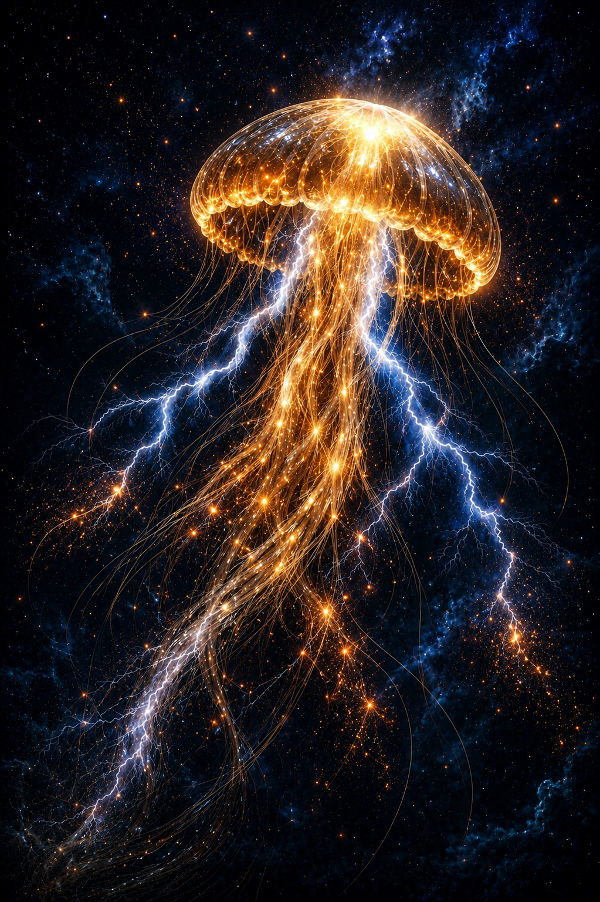

Far below the surface, where the ocean is quiet and the world moves slowly, there drifted a golden jellyfish. It did not hurry. It did not chase anything. It simply floated, rising and falling with gentle pulses, like a calm breath. From its soft, glowing bell, warm gold light spread through the water. And from its long, flowing tentacles, silver electricity shimmered—not sharp or loud, but soft and quiet, like distant lightning seen through clouds. Tiny copper sparks flickered around it, like little stars that had chosen the ocean instead of the sky. The jellyfish had no name, and it didn’t need one. It knew the rhythm of the deep. Up… and down. Glow… and dim. Drift… and rest. As it moved, small fish would gather nearby, drawn to its warmth. They didn’t speak. They didn’t need to. The jellyfish’s light was enough—steady, peaceful, and kind. Every so often, the silver currents would ripple gently through its tentacles, like a soft whisper traveling through water. Not a storm—just a quiet reminder that energy was always there, flowing, calm and endless. The ocean around it was dark, but never empty. The jellyfish carried its own little sunrise with it, wherever it went. And as it drifted, the water itself seemed to breathe with it. Slowly. Softly. Without effort. Nothing to do. Nowhere to be. Just floating… in the deep, quiet blue. And if you follow that gentle rhythm— that slow rise and fall— you might feel yourself drifting too… lighter… quieter… calmer… …like a golden jellyfish, carried peacefully through the dark, glowing softly into dreams.